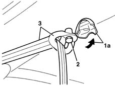
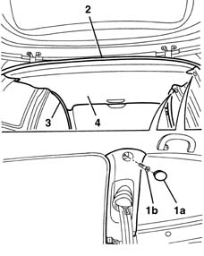
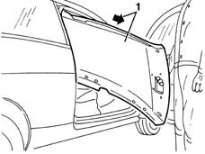

7040H10 roof panel lining - r r
- Path
- Procedures > 70 FITTINGS > 7040 BODYSHELL INTERIOR TRIMS AND FITTINGS > 7040H roof panel lining > 7040H10 roof panel lining - r r
- Kind
- repair procedure (removal / refitting; the operation number is the code)
- Applies to
- all engines; all production periods
- Interactive page
- https://sloeber94.github.io/elrnDB-lYpsln/en/#/2429591
Applies to: all engines; all production periods
 Removing
Removing
 Refitting
Refitting7065C30 interior l/h or r/h grab handle (one) - r+r (all)
7065C34 l/h or r/h sun blind (one) - r+r (left and right)
7040E10 front courtesy light - r+r
7040H30 front pillar trim - r r (left and right)
7040L40 front compartment scuff strip - r r
7050A20 one-piece rear seat cushion - r r
7040G30 boot light bulb holder - r r
7040H38 central pillar upper element - r r (left side)
7040H42 rear pillar trim - r r (left side)
7040A18 glove compartment on facia - arrange
7040A30 Left instrument panel lower TRIM - R.R.
2125A30 lever/knob cover - r + r
7040A28 TRIM on gearbox control panel - R.R.
1. Working at the back of the roof lining, release the cover (1a) and open it.
2. Undo the bolt.
3. Move the centre rear seat belt idler.

Applies to: all engines; all production periods
Lower the front seat backrests into the end of travel position.
1. Release the cover (1a) and undo the bolt (1b) for the right rear and centre pillar trims.
2. Release the tailgate housing seal in the area of the roof lining.
3. Release the door housing seals in the area of the roof lining.
4. Lower the roof lining.

Applies to: all engines; all production periods
1. Remove the roof lining extracting it through the right side door housing.

Applies to: all engines; all production periods
Refitting
RemovingCheck that the cover is undamaged.
Fit the lining in the vehicle through the right side door housing.
Fit the door and tailgate housing seals.
Positino the right centre and rear pillar trims, tighten the bolt and fit the cover.
Position the centre rear seat belt idler, tighten the bolt and fit the cover.
 | Fastening | Component | Ø | Value (daNm) |
|---|---|---|---|---|
- | Bolt | REAR SEAT BELT IDLER.. | 7/16" | 4.0 |
7040A28 TRIM on gearbox control panel - R.R.
7040A30 Left instrument panel lower TRIM - R.R.
2125A30 lever/knob cover - r + r
7040A18 glove compartment on facia - arrange
7040H42 rear pillar trim - r r (left side)
7040H38 central pillar upper element - r r
7040G30 boot light bulb holder - r r
7050A20 one-piece rear seat cushion - r r
7040L40 front compartment scuff strip - r r
7040H30 front pillar trim - r r (left and right)
7040E10 front courtesy light - r+r
7065C34 l/h or r/h sun blind (one) - r+r (left and right)
Topics linked from this page (16)
- 2125A30 lever/knob cover - r + r
- 7040A18 glove compartment on facia - arrange
- 7040A28 TRIM on gearbox control panel - R.R.
- 7040A30 Left instrument panel lower TRIM - R.R.
- 7040E10 front courtesy light - r+r
- 7040G30 boot light bulb holder - r r
- 7040H30 front pillar trim - r r
- 7040H38 central pillar upper element - r r
- 7040H42 rear pillar trim - r r
- 7040H50 rear panel - r r
- 7040L20 tunnel trim - r r
- 7040L40 front compartment scuff strip - r r
- 7050A10 rear seat - r+r
- 7050A20 one-piece rear seat cushion - r r
- 7065C30 interior l/h or r/h grab handle (one) - r+r
- 7065C34 l/h or r/h sun blind (one) - r+r